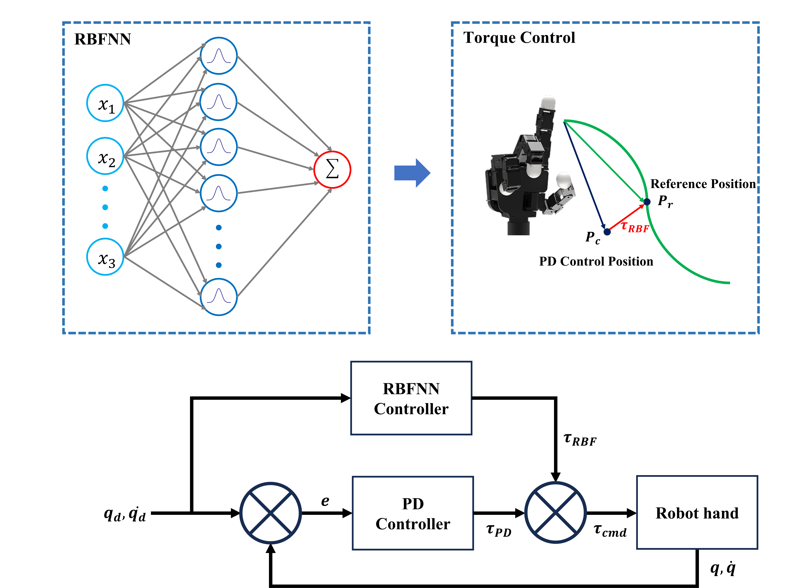

Manipulator DB 및 파이프라인 구축 직무
Research Intern · 지능로보틱스연구센터, 한국전자기술연구원(KETI)
Email dsafjk0024@naver.com ·
Homepage dsafjk0024.github.io ·
GitHub github.com/dsafjk0024
| 프로젝트 · 구성 | 주요 수행 내용 |
|---|---|
| 01 · 텔레오퍼레이션 기반 시연 데이터 파이프라인 구축개별 연구 · 3–6페이지 |
|
| 02 · Peg-In-Hole 시연 수집 · 모방학습공동 과제 · 7–8페이지 |
|
| 03 · Relocate 시연 수집 · 강화학습공동 과제 · 9–10페이지 |
|
| 04 · World Model 기반 Sim-to-Real공동 과제 · 11페이지 |
|
| 부록 · 로봇 제어 및 안전 요소기술12–13페이지 |
|
기술 스택 · 14페이지연구성과 · 15페이지
개별 연구 · SO-101 로봇을 활용한 모방학습
개별 연구 · 실제 로봇 평가
동일 데이터셋 · 실제 로봇 평가
| 평가 조건 | ACT | Flow Matching |
|---|---|---|
| 시연 범위 내 · 50회 | 74%37 / 50 | 60%30 / 50 |
| 가까운 배치 · 25회 | 96%24 / 25 | 76%19 / 25 |
| 먼 배치 · 25회 | 52%13 / 25 | 44%11 / 25 |
| Out of distribution · 10회 | 20%2 / 10 | 30%3 / 10 |
| 제어주기 30Hz | 29.8 Hz | 26.8 Hz |
결과먼 배치 · 시연 범위 밖에서 두 policy 모두 성공률 감소
데이터 확장시뮬레이션 데이터 생성 · co-training으로 배치 커버리지 확장
개별 연구 · Sim-to-Real
공동 과제 · 숙련된 로봇 조작 및 파지 성능을 지원하기 위한 평가방법 개발연구
공동 과제 · 숙련된 로봇 조작 및 파지 성능을 지원하기 위한 평가방법 개발연구
공동 과제 · 시촉각 센싱기반 모방학습에 의한 자율조작파지기술개발
공동 과제 · 시촉각 센싱기반 모방학습에 의한 자율조작파지기술개발
공동 과제 · AI 내장형 다중감각지능 통합모듈 및 로봇플랫폼 실증기술 개발
Unitree Go2 · SimDist 원문
사전학습 → MPPI 계획 → 실제 로봇 deployment
World Model · MPPI 제어기 50 Hz 실행
dynamics fine-tuning 전 · 후를 같은 하드웨어에서 비교
부록 · 로봇 제어 및 안전 요소기술

technical stack
publications & demonstrations
| 구분 | 제목 | 학회 · 행사 |
|---|---|---|
| 논문 | Tactile-Guided Residual Reinforcement Learning for Precise Connector Insertion— 공동저자 · 제2저자 · 삽입 연구 후속 | IEEE/IEIE ICCE-Asia 2026 |
| 포스터 | A Method for Estimating Contact Location on Dexterous Hand Fingertips — 제1저자 | ICCAS 2024, 제주 |
| 포스터 | RBFNN-Based Online Disturbance Compensation for Robust Grasping — 제1저자 | KRoC 2026 |
| 포스터 | Adaptive Control of a Multi-Fingered Dexterous Hand via RBFNN-based Residual Torque Compensation — 제1저자 | 생산제조 2025 |
| 라이브 데모 | 다중센서 통합 제어 프레임워크 — Relocate | RoboWorld 2024 |
| 라이브 데모 | 모방학습 매니퓰레이션 — Peg-in-Hole 삽입 | AutomationWorld 2026 |
thank you